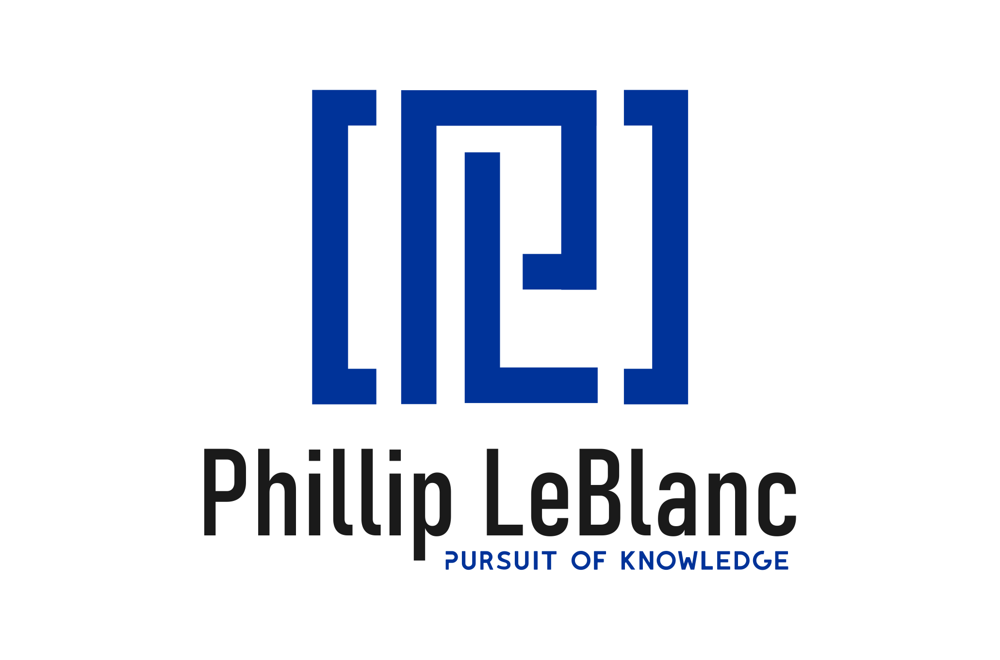

Hi, I'm Phillip LeBlanc.
A software engineer.
👋 About Me
I lead a high performing team of software engineers at Microsoft.
Living in Seoul, Korea 🇰🇷.
Graduated from Louisiana State University.
Worked for 5 years in Seattle on Azure Active Directory.